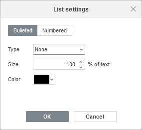
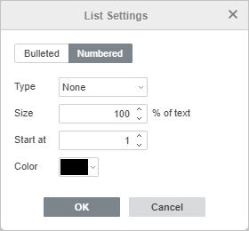

Kreiranje lista
Da biste kreirali listu u Uređivaču prezentacija,
- postavite kursor na mesto gde lista treba da počne (to može biti novi red ili već uneti tekst),
- prebacite se na karticu Početna na gornjoj traci sa alatkama,
-
izaberite tip liste koji želite da započnete:
- Nenumerisana lista sa oznakama se kreira pomoću ikone Oznake koja se nalazi na gornjoj traci sa alatkama
-
Numerisana lista sa brojevima ili slovima se kreira pomoću ikone Numerisanje koja se nalazi na gornjoj traci sa alatkama
Napomena: kliknite na strelicu nadole pored ikone Oznake ili Numerisanje da biste izabrali kako će lista izgledati.
- sada, svaki put kada pritisnete taster Enter na kraju reda, pojaviće se nova stavka numerisane ili nenumerisane liste. Da biste to zaustavili, pritisnite taster Backspace i nastavite sa običnim pasusom teksta.
Takođe možete promeniti uvlačenje teksta u listama i njihovo ugnježđivanje koristeći ikone Smanji uvlačenje i Povećaj uvlačenje na kartici Početna gornje trake sa alatkama.
Napomena: dodatni parametri uvlačenja i razmaka mogu se menjati na desnoj bočnoj traci i u prozoru naprednih podešavanja. Da biste saznali više o tome, pročitajte odeljak Umetanje i formatiranje teksta.
Promena podešavanja liste
Da biste promenili podešavanja liste sa oznakama ili numerisane liste, kao što su tip oznake, veličina i boja:
- kliknite na postojeću stavku liste ili izaberite tekst koji želite da formatirate kao listu,
- kliknite na ikonu Oznake ili Numerisanje na kartici Početna gornje trake sa alatkama,
- izaberite opciju Podešavanja liste,
-
otvoriće se prozor Podešavanja liste. Prozor podešavanja liste sa oznakama izgleda ovako:

- Tip – omogućava izbor odgovarajućeg znaka koji se koristi za listu. Kada kliknete na opciju Nova oznaka, otvara se prozor Simbol u kojem možete izabrati jedan od dostupnih znakova. Takođe možete dodati novi simbol. Da biste saznali više o radu sa simbolima, pogledajte ovaj članak.
Kada kliknete na opciju Nova slika, pojavljuje se novo polje Uvoz gde možete izabrati nove slike za oznake Iz datoteke, Sa URL-a ili Iz skladišta.
- Veličina – omogućava izbor odgovarajuće veličine oznake u zavisnosti od trenutne veličine teksta. Vrednost može biti u rasponu od 25% do 400%.
- Boja – omogućava izbor odgovarajuće boje oznake. Možete izabrati jednu od boja teme ili standardnih boja na paleti, ili odrediti prilagođenu boju.
Prozor podešavanja numerisane liste izgleda ovako:

- Tip – omogućava izbor odgovarajućeg formata brojeva koji se koristi za listu.
- Veličina – omogućava izbor odgovarajuće veličine brojeva u zavisnosti od trenutne veličine teksta. Vrednost može biti u rasponu od 25% do 400%.
- Počni od – omogućava izbor rednog broja od kog numerisana lista počinje.
- Boja – omogućava izbor odgovarajuće boje brojeva. Možete izabrati jednu od boja teme ili standardnih boja na paleti, ili odrediti prilagođenu boju.
- Tip – omogućava izbor odgovarajućeg znaka koji se koristi za listu. Kada kliknete na opciju Nova oznaka, otvara se prozor Simbol u kojem možete izabrati jedan od dostupnih znakova. Takođe možete dodati novi simbol. Da biste saznali više o radu sa simbolima, pogledajte ovaj članak.
- kliknite na U redu da biste primenili izmene i zatvorili prozor sa podešavanjima.